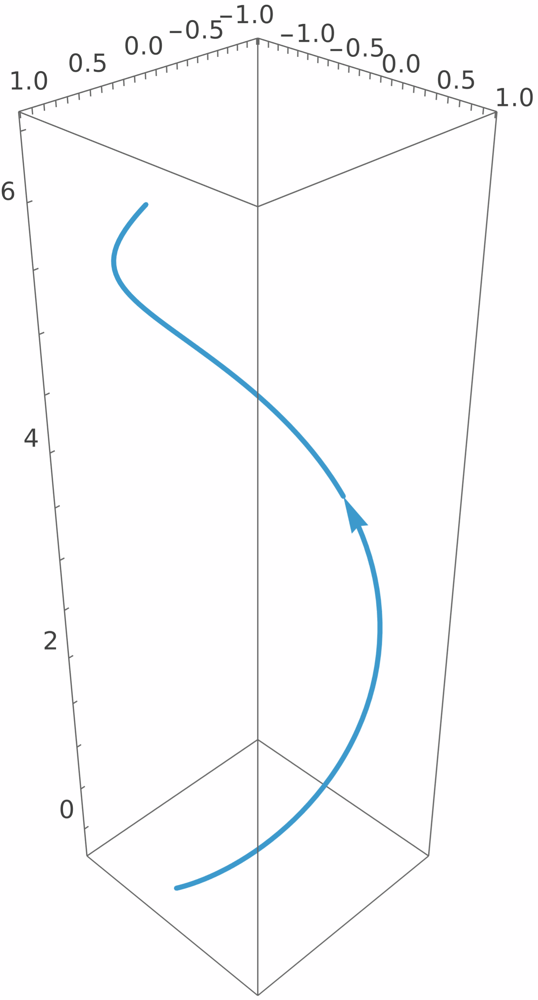
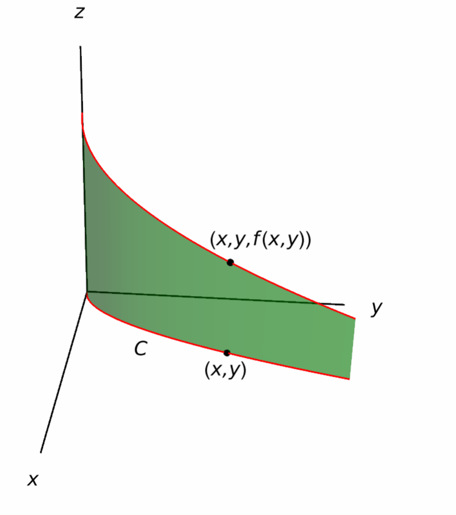
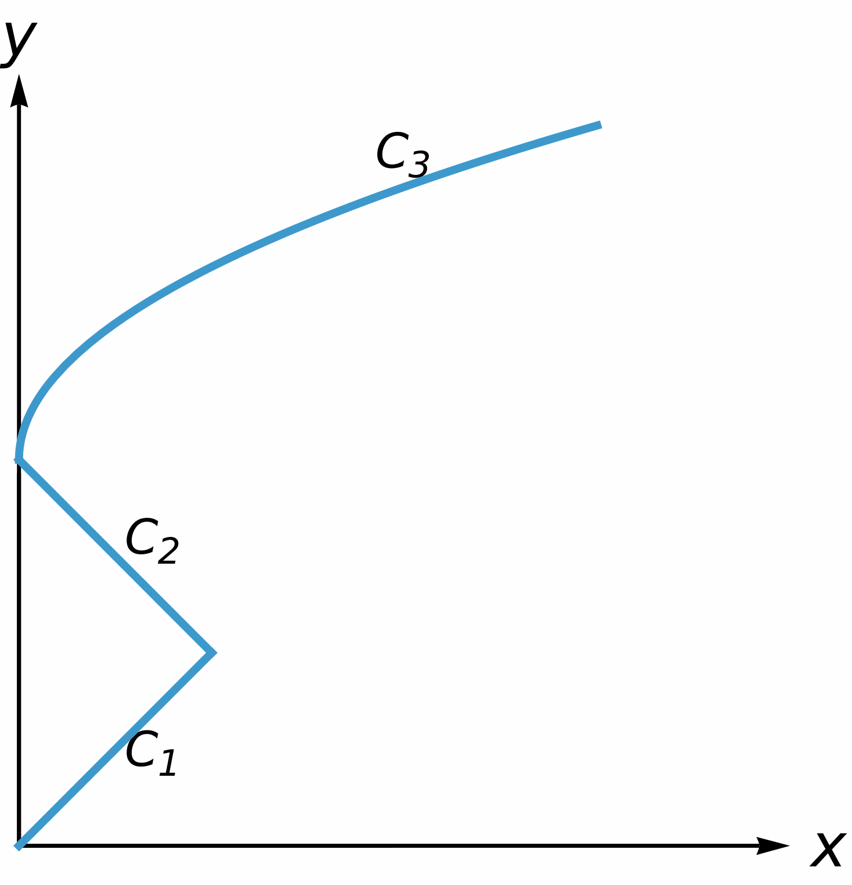
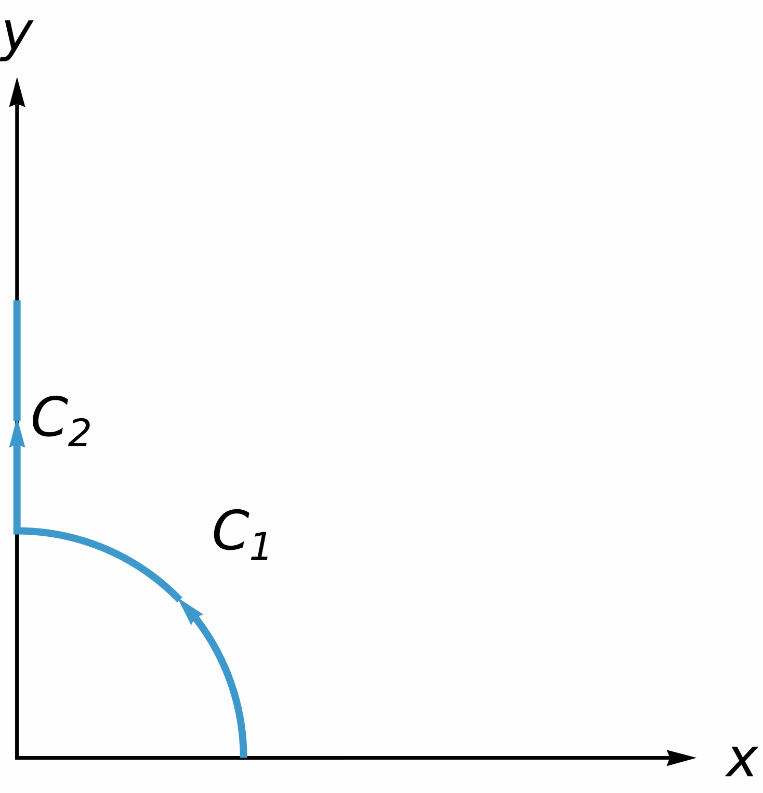
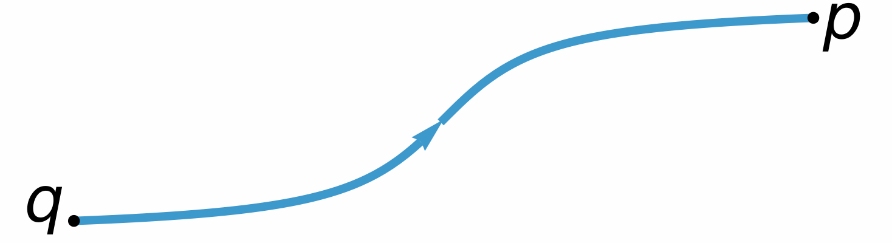
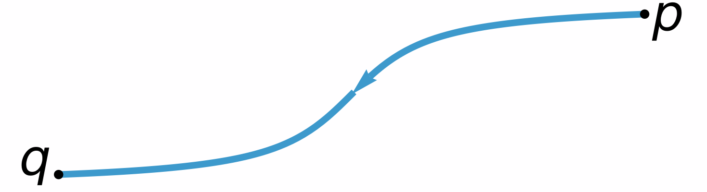
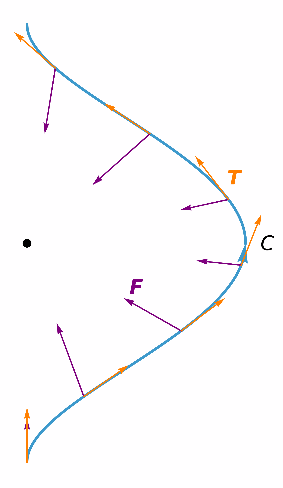
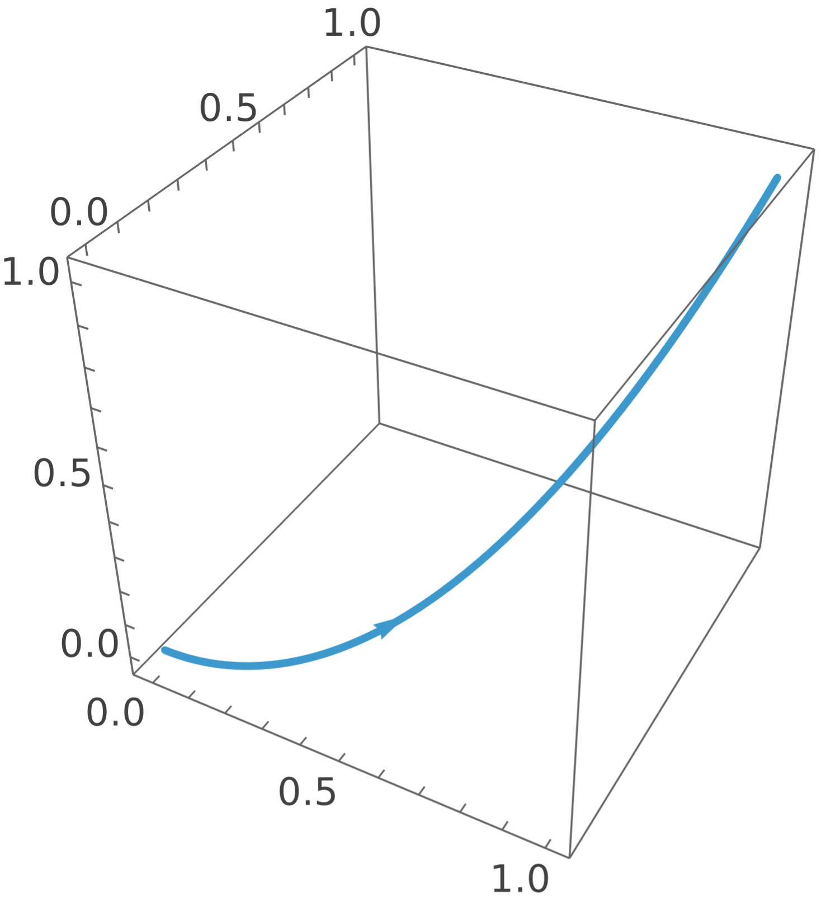

Line Integrals
In this section we will discuss how to integrate scalar fields and vector fields over curves in $\RR^n$. These will have a geometric interpretation that is similar to that of integrals of functions of one or several variables.
Line Integrals of Scalar Fields
Firstly, we are interested in integrating functions of several variables along curves. Recall that a curve $C$ in $\RR^n$ is a subset that can be parametrized by a function $c\colon [a,b]\to\RR^n$, where $[a,b]$ is an interval in $\RR$.
We can split a curve $c\colon [a,b]\to\RR^n$ into its components \[ c(t)=(x_1(t),\dots,x_n(t)),\qquad t\in [a,b], \] so that the components $x_1(t),\,\dots,\,x_n(t)$ are functions of a single variable on $[a,b]$. In addition, we can identify the points in the curve with their position vectors \[ \bf{r}(t)=\langle x_1(t),\dots,x_n(t)\rangle, \qquad t\in [a,b]. \] Moreover, recall that if $c$ is smooth, that is, differentiable, then the length of the curve $C$ is given by the formula \[ \mathscr{L}(C)=\int_a^b\lvert\bf{r}'(t)\rvert \,dt = \int_a^b\sqrt{x_1'(t)^2+\cdots+x_n'(t)^2}\,dt. \]
With this in mind, we can now define the integral of a scalar field on a curve $C$:
Solution.

Geometric Interpretation of Line Integrals
It is possible to give a geometric interpretation of line integrals for functions of two variables. Suppose that we are given a curve $C$ in the plane, given by $c(t)=(x(t),y(t))$. If $f(x,y)$ is a nonnegative function that is defined along $C$, we can consider the space curve $\bar{C}$ in $\RR^3$ described by \[ \overline{c}(t)=(x(t),y(t),f(x(t),y(t))). \]
Then, the line integral $\int_Cf(x,y)\,ds$ coincides with the area that is enclosed below the space curve $\bar{C}$ and above the plane curve $C$.

Line Integrals over Piecewise Smooth Curves
We can extend the notion of line integrals to curves that are not completely smooth, but only have a finite number of corners.

Solution.
We can split the desired integral into \[ \int_C(x+y)\,ds = \int_{C_1}(x+y)\,ds + \int_{C_2}(x+y)\,ds, \] where $C_1$ denotes the arc of the circle and $C_2$ is the vertical segment.
The arc $C_1$ can be parametrized counter-clockwise with \[ \bf{r}_1(t)=\langle \cos t,\sin t\rangle,\qquad 0\leq t\leq\frac{\pi}{2}. \]

Here, $\bf{r}_1'(t)=\langle -\sin t,\cos t\rangle$, so that $\lvert \bf{r}_1'(t)\rvert = 1$. This gives \[ \begin{aligned} \int_{C_1}(x+y)\,ds ={}& \int_0^{\frac{\pi}{2}}(\cos t+\sin t)\,dt = \big[\sin t-\cos t\big]_{t=0}^{t=\frac{\pi}{2}} = 2. \end{aligned} \]
Moreover, the segment $C_2$ may be parametrized by \[ \bf{r}_2(t)=\langle 0,t\rangle,\qquad 1\leq t\leq 2, \] with $\bf{r}_2'(t)=\langle 0,1\rangle$, so that $\lvert\bf{r}_2'(t)\rvert = 1$. Consequently, \[ \begin{aligned} \int_{C_2}(x+y)\,ds ={}& \int_1^2t\,dt = \bigg[\frac{t^2}{2}\bigg]_{t=1}^{t=2} = \frac32. \end{aligned} \] In conclusion, \[ \int_{C}(x+y)\,ds = 2+\frac32=\frac72. \]
Orientation and Line Integrals
Keep in mind that, by definition, the line integral of a function $f$ on the curve $C$ is explicitly dependent on the parametrization that we choose for $C$. Therefore, a natural question to consider is if changing the parametrization of our curve will result in a different line integral.
Suppose that $C$ is a curve in $\RR^n$. Here, we only work with parametrizations that traverse $C$ exactly once. However, depending on the parametrization that we choose, we may be traversing $C$ in one of two possible directions. This is called an orientation of $C$, and every curve has exactly two orientations. For example, here are the two possible orientations for the curve $y=\arctan(x)$ in the plane:


Once we choose an orientation for a curve $C$, it is customary to denote by $-C$ the curve consisting of the same points as $C$, but parametrized with the opposite orientation.
For the case of line integrals of scalar functions, we have:
Line Integrals of Vector Fields
It is also possible to find the line integral of a vector field along a curve. The motivation for these integrals comes from the notion of work in physics.
Suppose that a particle is travelling along a curve $C$ in space, and there is a (continuous) force field $\bf{F}$ that is acting on this particle. Denote by $\bf{r}(t)$ the position vector of the particle at time $t$ and by $\bf{T}(t)=\bf{r}'(t)/\lvert \bf{r}'(t)\rvert$ the unit vector that points in the direction of $\bf{r}'(t)$.
The work done by the force in moving the particle from $\bf{r}(a)$ to $\bf{r}(b)$ along $C$ can be shown to be \[ W = \int_C \bf{F}\cdot \bf{T}\,ds = \int_a^b \bf{F}(\bf{r}(t))\cdot\frac{\bf{r}'(t)}{\lvert \bf{r}'(t)\rvert} \lvert\bf{r}'(t)\rvert\,dt = \int_a^b \bf{F}(\bf{r}(t))\cdot\bf{r}'(t)\,dt. \]

With this in mind, we define the line integral of a vector field as follows:
If $C$ is a piecewise smooth curve, then the integral $\int_C \bf{F}\cdot d\bf{r}$ is computed by applying the above formula to the smooth components of $C$ and adding the corresponding integrals.
Solution.
We can parametrize the circle $C$ by the vector function \[ \bf{r}(t)=\langle 2 \cos t,2\sin t\rangle, \qquad 0\leq t\leq 2\pi. \] Here, we have $\bf{r}'(t)=\langle -\sin t,\cos t\rangle$. Therefore, the desired line integral is \[ \begin{aligned} \int_C \bf{F}\,\cdot\, d\bf{r} ={}& \int_0^{2\pi}\langle 6\cos t,8\sin t\rangle\cdot \langle -2\sin t,2\cos t \rangle\,dt = \int_0^{2\pi}4\sin t\cos t\,dt = \int_{0}^{2\pi}2\sin(2t)\,dt = 0. \end{aligned} \]
A Component Description for Line Integrals
Recall that a vector field $\bf{F}$ on a subset of $\RR^2$ may be decomposed into its components: \[ \bf{F}=P\,\bf{i}+Q\,\bf{j}. \] If $C$ is a curve in $\RR^2$ parametrized by $\bf{r}(t)=\langle x(t),y(t)\rangle$, $t\in [a,b]$, then the line integral of $\bf{F}$ on $C$ is \[ \int_C\bf{F}\,\cdot\,d\bf{r} = \int_a^b \big(P(x(t),y(t))x'(t)+Q(x(t),y(t))y'(t)\big)\,dt. \] We may break this integral into two: \[ \int_a^b P(x(t),y(t))x'(t)\,dt, \qquad\textsf{and}\qquad \int_a^b Q(x(t),y(t))y'(t)\,dt. \]
It is customary to denote the above integrals by \[ \int_C P\,dx = \int_a^b P(x(t),y(t))x'(t)\,dt,\qquad \int_C Q\,dy = \int_a^b Q(x(t),y(t))y'(t)\,dt. \] Here, we are recalling that $dx=x'(t)\,dt$ and $dy=y'(t)\,dt$. The first integral is called the line integral with respect to $x$ of $P$ along $C$, whereas the second integral is the line integral with respect to $y$ of $Q$ along $C$. This yields:
Similarly, for a vector field $\bf{F}=P\,\bf{i}+Q\,\bf{j}+R\,\bf{k}$ in three dimensions we also have a component expression for its line integral along a curve $C$:
Solution.
In this case, we have \[\bf{r}'(t)=\langle 1,2t,3t^2\rangle,\] so \[ \begin{aligned} \int_C xy\,dx+yz\,dy+zx\,dz ={}& \int_0^1 \big(t^3+5t^6\big)\,dt=\frac{27}{28}. \end{aligned} \]

Appendix: Some Curves
Here we collect the basic parametrizations of some curves in the plane:
- The line segment. Consider two points $p$ and $q$ in $\RR^n$. The line segment that goes from $p$ to $q$ can be parametrized by \[ \bf{r}(t)=p+t(q-p),\qquad 0\leq t\leq 1. \]
-
The circle.
The circle of radius $R>0$ centered at the point $(a,b)$
has equation
\[
(x-a)^2+(y-b)^2=R^2.
\]
It can be parametrized as follows:
- Counter-clockwise parametrization (starting from $(a+R,b)$): \[ \bf{r}(t)=\langle a+ R\cos t, b+R\sin t\rangle, \qquad 0\leq t\leq 2\pi. \]
- Clockwise parametrization (starting from $(a+R,b)$): \[ \bf{r}(t)=\langle a+ R\cos t, b-R\sin t\rangle, \qquad 0\leq t\leq 2\pi. \]
-
The ellipse.
The ellipse centered at the origin with semiaxes $a$ and $b$
has equation
\[
\bigg(\frac{x}{a}\bigg)^2+\bigg(\frac{y}{b}\bigg)^2=1.
\]
This ellipse may be parametrized as follows:
- Counter-clockwise parametrization (starting from $(a,0)$): \[ \bf{r}(t)=\langle a\cos t, b\sin t\rangle, \qquad 0\leq t\leq 2\pi. \]
- Clockwise parametrization (starting from $(a,0)$): \[ \bf{r}(t)=\langle a\cos t, -b\sin t\rangle, \qquad 0\leq t\leq 2\pi. \]